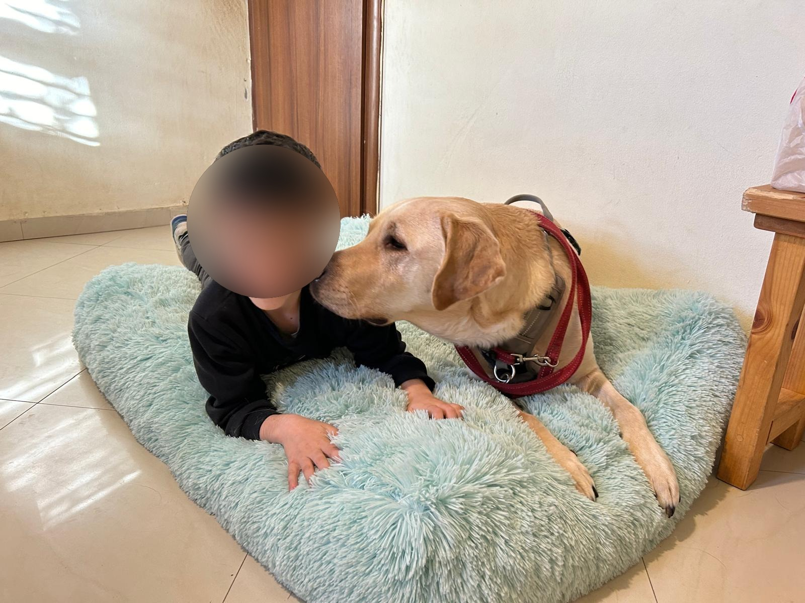
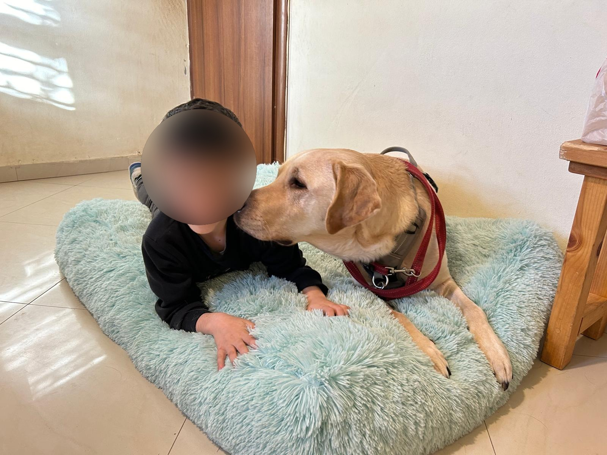
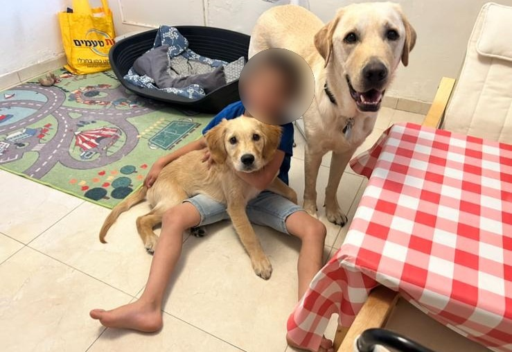
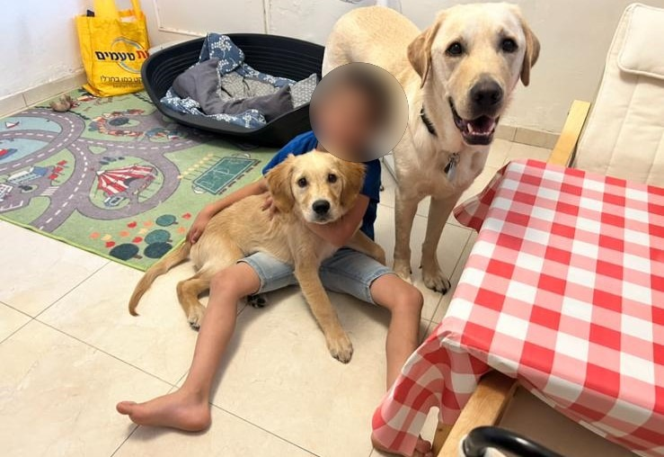

השירותים שלנו
מפגשים קבוצתיים
המפגשים הקבוצתיים יוצרים סביבה דינאמית בה המשתתפים יכולים
לתקשר עם הכלבים הטיפוליים ואחד עם השני. מפגשים אלו מעודדים
.עבודת צוות, חיזוק תחושת המסוגלות ופיתוח מיומנויות בינאישיות
נוכחותם של הכלבים יכולה להקל על חרדות חברתיות וכך לשמש
.כגשר חברתי בין כל המשתתפים
המפגשים הקבוצתיים יכולים להתאים במיוחד למסגרות חינוכיות
,וטיפוליות שונות, דוגמת בתי ספר, פנימיות, גני ילדים, מעונות יום
.מסגרות של חינוך מיוחד, ועוד
.התוכנית מאושרת במערכת גפ''ן ומספרה- 38399
מפגשים פרטניים
,המפגשים הפרטניים מותאמים לצרכים הספציפיים של המשתתף
,ומוענקת בהם חוויה ייחודית של ''אחד על אחד''. במהלך המפגשים
הכלבים הטיפוליים נוכחותם המרגיעה של הכלבים מסייעת בבניית
האמון, שיפור הויסות הרגשי והפחתת חרדה- אלמנטים שתורמים לחיזוק
.הקשר ולטיפוח תחושה של ביטחון ללא תנאי
תשומת הלב האישית מאפשרת פיתוח מטרות מותאמות אישית, מה
שהופך את המפגשים הללו לאידיאליים עבור ילדים, מתבגרים ונוער
.הזקוקים לתמיכה ממוקדת ומותאמת אישית
המפגשים הפרטניים מתאימים במיוחד עבור ילדים, מתבגרים ונוער
המתמודדים עם קשיים באינטראקציות חברתיות, חוסר ביטחון, חשש
,מכלבים, קשיים בויסות החושי והרגשי, לקויות קשב וריכוז, חרדה
.קשיים מוטורים, ועוד
 

 
